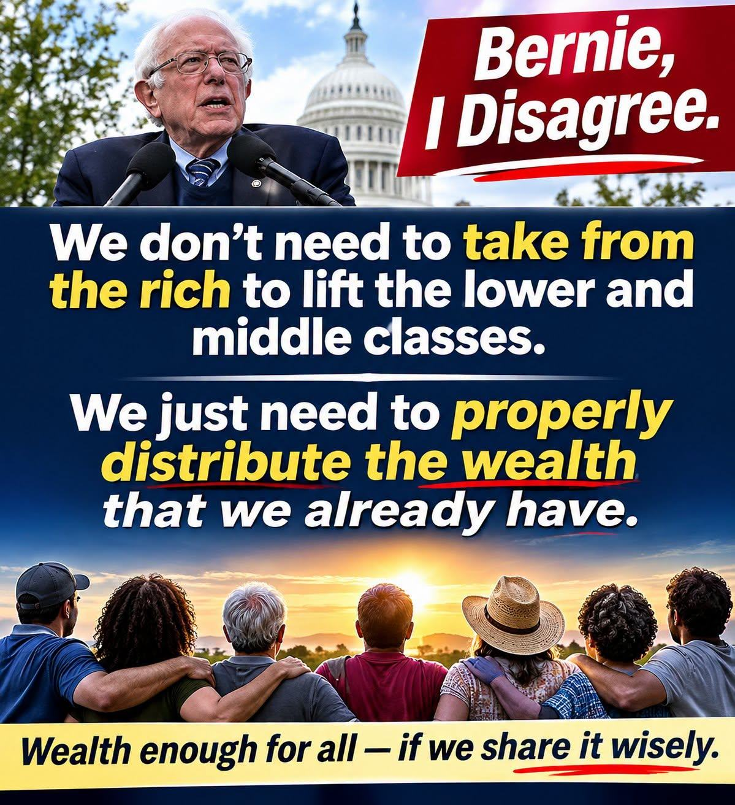

ARTICLE #004 · November 2026 · Willis Butts
We Don’t Have to Take from the Rich to Lift Everyone Up
Restructuring the economy to share the abundance we already have

Illustration represents the author’s views, not a quotation or endorsement from Senator Sanders.
A disagreement about the method, not the goal
I agree with the goal of lifting people out of poverty and giving every family a real chance to flourish. Where I differ with Bernie Sanders is in how we might get there. We do not have to begin by taking wealth away from people who have succeeded. We can begin by looking at the enormous wealth of useful goods, services, knowledge, productive capacity, and generosity that already exists—and by designing better ways for everyone to benefit from it.
The world is rich in more than money
Our farms produce food. Our factories produce clothing, appliances, tools, and building materials. Our stores and warehouses hold vast inventories. Our homes contain usable items sitting idle. Our communities are filled with people who have skills and time to share. Yet people still go hungry, sleep outdoors, or struggle to obtain the necessities of life. This contradiction points to a systems problem: the capacity to produce and the ability to access are not the same thing.
Change the structure, not the people
Money is a powerful coordination tool. It rewards work, finances investment, and helps businesses survive. But a system that depends entirely on purchasing power can exclude people even when useful goods are nearby. We should complement markets with a coordinated network of voluntary sharing, responsible public investment, and community access. The question is not how to punish the successful. It is how to connect unused capacity and willing contributors to people whose needs are unmet.
Community Havens: an access system
Imagine a Community Haven in every neighborhood: a welcoming place where surplus groceries, donated household essentials, repaired appliances, shared meals, rest facilities, and local services are available without stigma. Businesses could donate usable surplus rather than discard it. Families could pass along items they no longer need. Local workers and volunteers could organize safe collection, storage, and distribution. Farms, kitchens, gardens, and training programs could expand what each Haven can offer. This is not an argument for taking private property. It is a proposal to make voluntary generosity and public service more effective through sound organization.
A different measure of prosperity
We often measure an economy by the value of transactions. But a family that receives safe food, a working refrigerator, or a place to sleep gains something important even when no sale occurs. A system that reduces waste and lowers the cost of meeting basic needs can improve everyday living standards. That does not automatically mean nationwide price deflation, nor does it eliminate the costs of labor, transport, buildings, or safety. It means we should measure success by real access and well-being as well as dollars exchanged.
Keep incentives and build trust
People who create successful enterprises should still have incentives to innovate, invest, hire, and produce. Businesses participating in a Haven network should do so voluntarily, with clear rules and transparent accounting. Public funds, if used, should be approved openly and evaluated against measurable results. Food safety, fair staffing, supply reliability, privacy, and equitable access are essential. The aim is to build a complementary system that strengthens communities—not to replace every store or pretend that all resources are unlimited.
Test the idea and improve it
Start with a pilot. Partner with local grocers, farms, manufacturers, churches, civic groups, and residents. Track how much food and material is rescued, how many households are helped, how much it costs, and what problems arise. Use technology to coordinate deliveries and forecast demand. Expand only when the evidence shows that the model works. This is systems engineering applied to human need: design, measure, learn, and improve.
An invitation, not a battle
We do not need another war between the rich and the poor. We need an economy that makes room for everyone to participate in its abundance. There is no reason to shame people for what they have earned, and no reason to abandon people who have too little. The task is to build bridges between resources and needs. We already know how to produce remarkable things. Now let us become equally remarkable at sharing them. There is no them. There is only us.